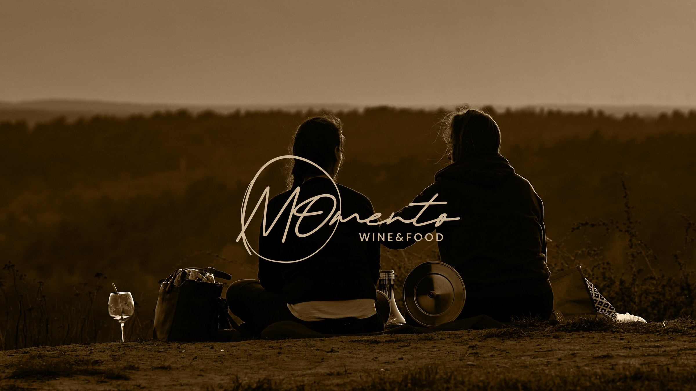
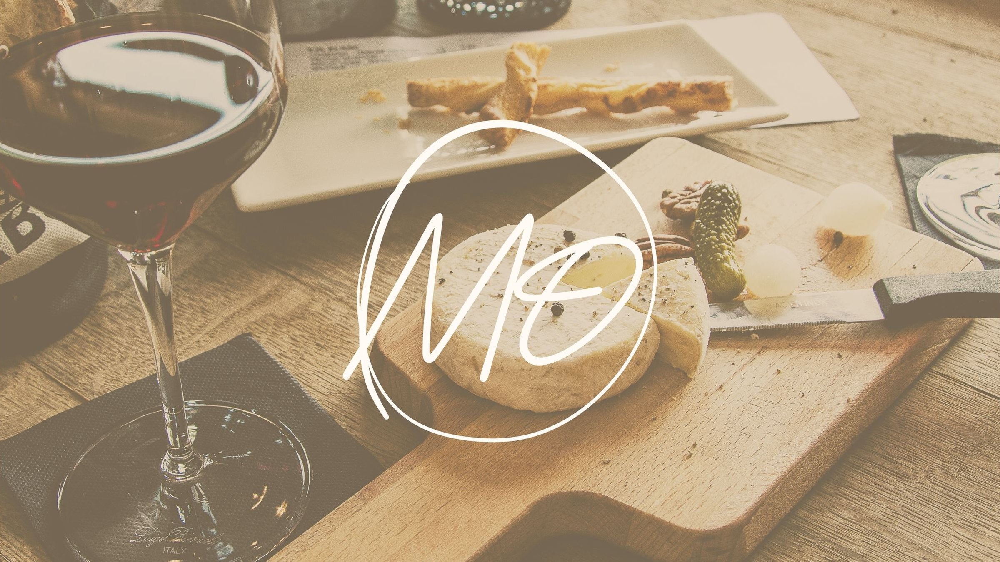
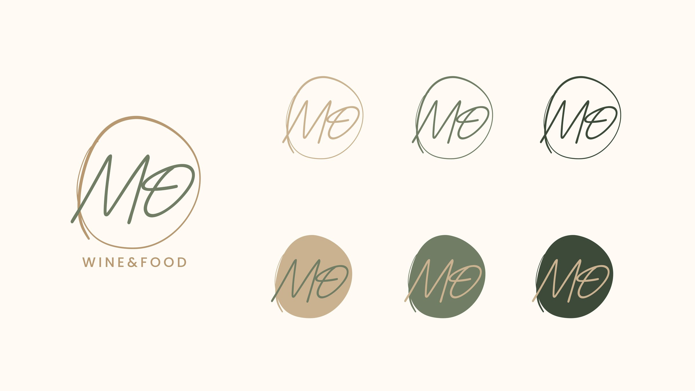
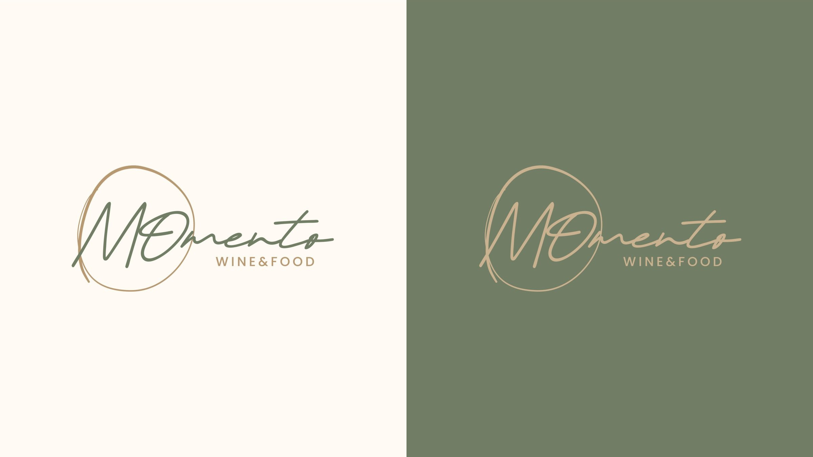
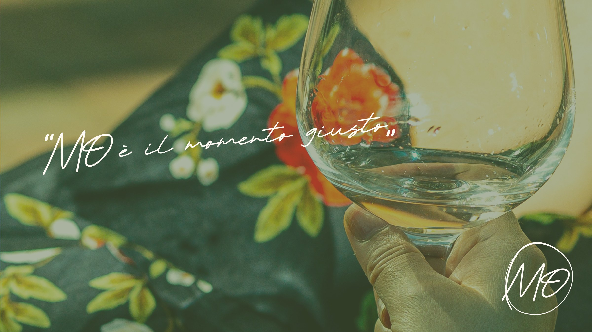

Momento
MO, nei dialetti italiani, vuol dire “ora”: per Momento Wine & Food un monogramma corsivo che invita a vivere il presente, con calore.

01 — Il monogramma
Le lettere MO scritte a mano dentro un ovale: un segno elegante che accoglie.


02 — La palette
Colori di terra e di vigna, presi dalla tavola e dalla campagna.
Il sistema in una tavola
A Colore
Verde bosco#3D4A39
Cuoio#B89871
Sabbia#CBB190
Salvia chiaro#B2BAA6
Salvia#717D64
Crema#FFFBF4
03 — Il momento giusto
Il tono è quello di un brindisi tra amici: semplice, caldo, senza fretta.
